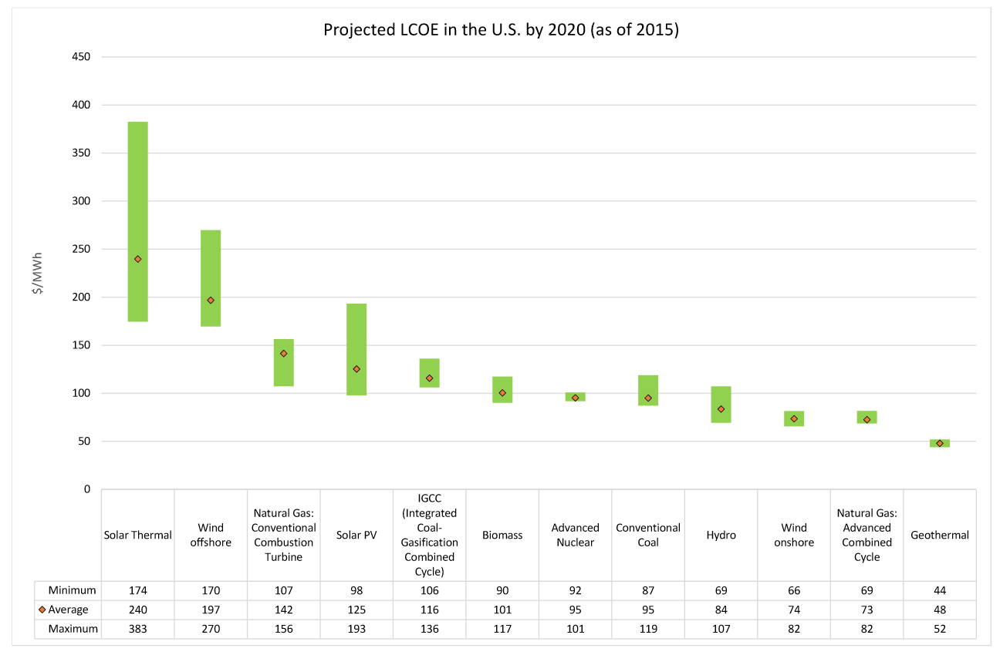
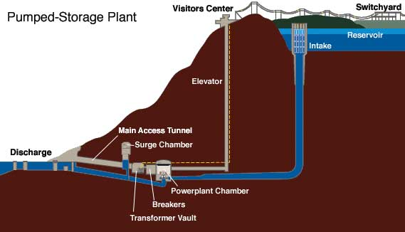

Renewable Energy
It is important that the world finds a sustainable source of energy that does not
cause unmanageable harm to the environment. Ideally, we would use an energy source
that is cheap, completely renewable, carbon-neutral, and does not produce any toxic
byproducts. Improvements in technology and scaling of the renewable energy economy
could make this a reality within the near future. At this moment however, solar and
wind lack in affordability and availability.
The LCOE (levelised cost of electricity) is a measure of the monetary cost of electrical
energy per watt hour. It is a powerful statistic as it accounts for all of the factors
that could affect the cost of energy. This includes transmission cost, operation cost,
transportation of materials, the operating lifetime of a plant, and many other factors.
The following image shows the predicted LCOE for each source of energy in the US in 2020.

One of the main challenges with providing renewable energy is the availability of these sources.
Geothermal is predicted to be the absolute cheapest source of energy in 2020 but it
can only be used in areas with rare natural steam vents. In 2015, less than half of one
percent of energy in the US came from geothermal sources
(Source:
eia.gov
).
The next cheapest renewable source,
wind, can obviously only be generated when the wind is blowing. Intermittent generation
of power means it will be unreliable. A power network with many wind sources could
struggle to meet demand on some days and have overproduction on other days. Even solar has
problems with availability. Solar power networks have a surplus of energy during the day and
have to rely on other sources at night. Thermal and photovoltaic solar are predicted to still
be some of the most expensive energy sources in 2020.
A possible solution to this is to store energy when there is a surplus and use that stored energy at times
when not enough is being generated. Of course storing megawatt hours of energy is not feasible
with our current battery technology. An interesting solution for banking large
amounts of energy is Pumped-Storage Hydroelectricity. More information can be found by following
the link below.
Pumped-Storage Hydroelectricity - Wikipedia
Pumped-Storage Hydroelectricity works by pumping water uphill into a reservoir. When energy is needed,
a valve is opened and water from the reservoir flows through a turbine. The potential energy from the
weight of the water is converted to kinetic energy and turns the turbine, creating electrical energy.
This system would be built near a renewable energy plant, for example, a solar farm. During the day,
excess power generated by the solar panels would be used to pump water into the reservoir. At night,
the reservoir would drain through the turbine to get the energy back.

These systems are efficient. More than 80 percent of the energy used during pumping is recovered when
the water is drained. Solar panels and wind turbines are typically shut down when
generating more power than needed. This puts that energy to very good use. There are currently 38
Pumped-Storage Hydroelectric stations operating in the US.
Source:
energystore.org